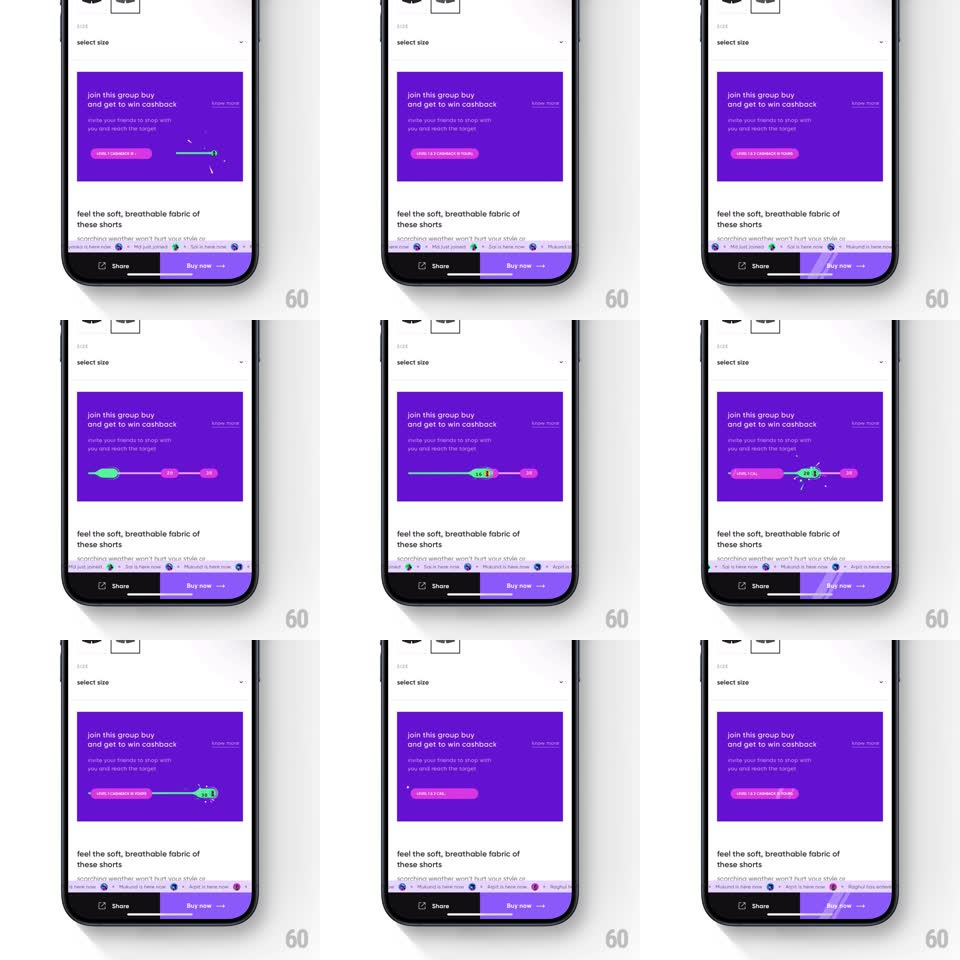

Media
Frame-by-frame

Rebuild this animation 1:1: CRED's group-buy level slider - inside the purple "join this group buy and get to win cashback" card, a progress slider morphs and fills between milestone nodes as friends join, unlocking levels.

Rebuild this animation 1:1: CRED's group-buy level slider - inside the purple "join this group buy and get to win cashback" card, a progress slider morphs and fills between milestone nodes as friends join, unlocking levels.
## Integration
Integration: stack-agnostic spec - springs given as stiffness/damping, timed motions as duration + curve; map every value to your framework and animation library of choice.
## Scene
A product page ("select size", Share / Buy now bar) with a purple group-buy card: headline, invite copy, and a horizontal progress element with milestone nodes and a status pill ("invite 1 friend" -> "level unlocked").
## Motion spec
Pattern: milestone slider fill with node pops, ~800ms per level.
- Invite: the status pill morphs its label (width animates, spring ~360/22, 300ms, label crossfade 150ms) as the slider track appears.
- Fill: the track's fill sweeps from the current node toward the next (500ms, ease-in-out) with a shimmer highlight riding the leading edge.
- Node pop: when the fill reaches a milestone, the node pops (scale 0.8 -> 1.2 -> 1, spring ~380/16) and flips to its unlocked state (color + check, 200ms) - the active node glows green.
- Level tick: the level badge counts up with a digit roll (200ms) as the node lands.
- Repeat: further joins continue the sweep to the next milestone.
## Calibration
- The fill never teleports - progress is always a visible sweep from the last state.
- The leading node travels with the fill edge, not ahead of it.
## Reduced motion
Fill steps instantly to the new level; node state swaps without pop.
## Don't miss
- The purple card stays put - all motion is inside the slider element.
- Unlocked and locked milestone states must be visually distinct at a glance.